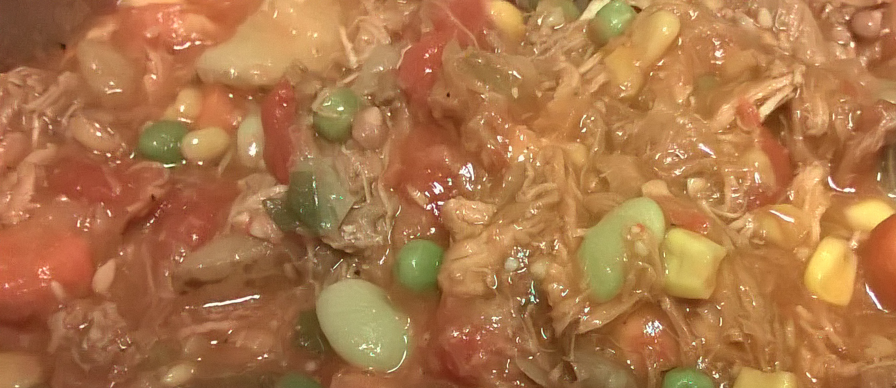

Brunswick Stew

Description
A Southern US staple, Brunswick Stew turns leftover meat, frozen vegetables, and pantry seasonings into a hearty meal or side in less time that you return home with take out!
Ingredients
- BBQ Pork, shredded leftovers
- Chicken, shredded leftovers
- Onion, chopped
- Garlic, minced
- Corn, frozen
- Lima Beans, frozen
- Okra, frozen (optional)
- Peas and Carrots, frozen
- Tomatoes, canned with juices
- Chicken Stock, ~3 C
Seasoning
- 1 T Worcestershire
- 2 T Brown Sugar
- 1 tsp (each) Salt, Black Pepper
- 1 tsp Cayenne Pepper, optional
- 1-½ C Ketchup or BBQ Sauce
Steps
- Shred and saute roughly equal portions of leftover chicken and pork, in a large Dutch Oven, until meat begins forming crispy edges.
- Add the Chicken Stock, stirring to incorporate anything stuck to the bottom of the pan. Mix in the remaining seasoning and flavors.
- Stir in the frozen vegetables. Bring to a boil before lowering the heat. Simmer 20-30 minutes to thicken the broth. (Additional Ketchup or BBQ Sauce may be added to thicken the broth, adjust seasonings to taste.)
Notes
- Increase or decrease the quantities of ingredients to adjust number of servings.
- Think ahead and freeze leftover meats to have them on hand when you are ready to make this.
- Serve with Cornbread or Hush Puppies
- Use less Chicken Stock if you are preparing this in a Slow Cooker
- Start this on the stovetop and slide your covered stew pot into the oven on a low (225-300F) temp to keep warm until dinner time.